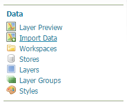

Installing the Importer extension¶
Visit the website download page, locate your release, and download: geoserver-2.22.4-importer-plugin.zip
Verify that the version number in the filename (for example 2.22.4 above) corresponds to the version of GeoServer you are running.
Extract the archive and copy the contents into the GeoServer
WEB-INF/libdirectory.Restart GeoServer.
To verify that the extension was installed successfully, open the Web administration interface and look for an Import Data option in the Data section on the left-side menu.
Importer extension successfully installed.¶
For additional information please see the section on Using the Importer extension.
Previous: Importer